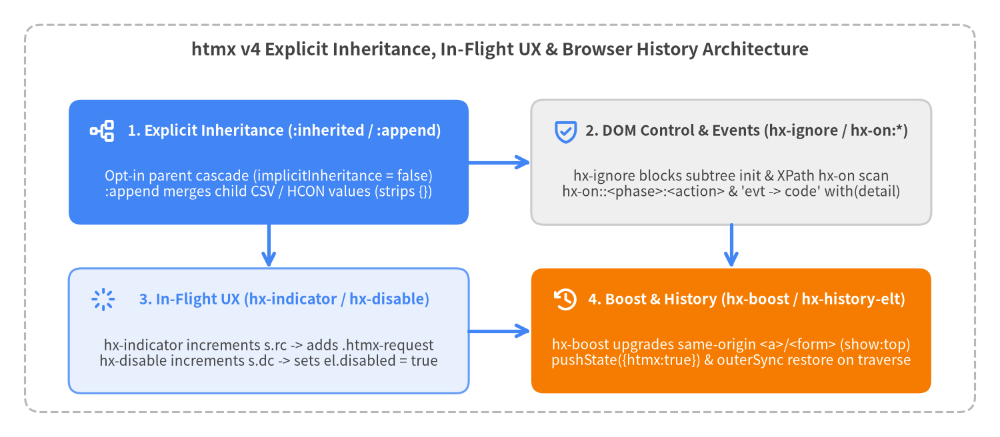

UX, History, Events & Inheritance Control Attributes
htmx v4 refines how progressive enhancement, browser history restoration, in-flight loading states, untrusted content isolation, inline event scripting, and attribute inheritance work across the DOM. Crucially, htmx v4 makes attribute inheritance explicit by default via :inherited and :append, renames htmx 2's hx-disabled-elt to hx-disable, repurposes hx-ignore (formerly hx-disable) as the subtree sanitization boundary, and replaces localStorage history snapshots with clean network-backed outerSync restoration via hx-history-elt.
| Attribute / Modifier | Category | Value Format | htmx 2 Equivalent | Core Behavior |
|---|---|---|---|---|
hx-boost |
Navigation & UX | "true" | "false" | HCON |
hx-boost (implicit) |
Progressively enhances same-origin <a href> and <form> elements into AJAX requests targeting document.body with push:'true' and show:'top'. |
hx-push-url |
Browser History | "true" | "false" | URL Path |
hx-push-url |
Pushes a new entry into browser history via history.pushState({htmx: true}, '', path) during the swap phase. |
hx-replace-url |
Browser History | "true" | "false" | URL Path |
hx-replace-url |
Replaces the current browser history entry via history.replaceState({htmx: true}, '', path) during the swap phase. |
hx-history-elt |
Browser History | Boolean / Marker Attribute | hx-history-elt |
Designates the container restored via outerSync on back/forward navigation instead of document.body. |
hx-indicator |
In-Flight UX | CSS / Extended Selector | hx-indicator |
Applies htmx.config.requestClass (htmx-request) to matched elements while requests are in flight, using reference counting (s.rc). |
hx-disable |
In-Flight UX | CSS / Extended Selector | hx-disabled-elt |
Sets .disabled = true on matched form controls while requests are in flight, using reference counting (s.dc). |
hx-ignore |
Security Control | Boolean / Marker Attribute | hx-disable |
Halts all htmx attribute scanning, element initialization, and hx-on:* binding on the element and its entire subtree. |
hx-on:* |
Inline Scripting | JS Code / Arrow Specs | hx-on:* |
Binds inline async event handlers for DOM events (hx-on:click), htmx lifecycle events (hx-on::after:swap), or multi-handler specs (hx-on="... -> ..."). |
:inherited |
Inheritance | Attribute Name Modifier | (Implicit by default) | Explicitly opts an attribute on a parent element into inheritance by descendant elements (hx-target:inherited="#main"). |
:append |
Inheritance | Attribute Name Modifier | (New in htmx 4) | Appends comma-separated or HCON values on a child element to an inherited parent attribute (hx-include:append="#extra"). |

Source Code
from drawlib.canvas import save, setup
from drawlib.icons import phosphor
from drawlib.lines import line
from drawlib.shapes import rectangle
from drawlib.styles import Styles
from drawlib.text import text
setup(width=160, height=70, dpi=150)
# Outer container frame
rectangle((80, 35), width=152, height=62, style=Styles.MutedDashed.patch(shape_r=2.5))
text(
(80, 62.0),
"htmx v4 Explicit Inheritance, In-Flight UX & Browser History Architecture",
style=Styles.DarkBold.patch(text_size=12.5),
)
x_left = 43.0
x_right = 117.0
y_top = 44.0
y_bot = 17.0
card_w = 64.0
card_h = 20.0
# 1. Explicit Inheritance (Top-Left, Focal Point 1)
rectangle((x_left, y_top), width=card_w, height=card_h, style=Styles.PrimaryFlat.patch(shape_r=2.0))
phosphor.tree_structure((x_left - 26.5, y_top + 5.0), width=4.4, style=Styles.WhiteBold)
text((x_left + 2.5, y_top + 5.0), "1. Explicit Inheritance (:inherited / :append)", style=Styles.WhiteBold.patch(text_size=10.5))
text(
(x_left, y_top - 3.5),
"Opt-in parent cascade (implicitInheritance = false)\n:append merges child CSV / HCON values (strips {})",
style=Styles.White.patch(text_size=10.0),
)
# 2. Subtree Security & Inline Events (Top-Right, Neutral)
rectangle((x_right, y_top), width=card_w, height=card_h, style=Styles.Neutral.patch(shape_r=2.0))
phosphor.shield_check((x_right - 26.5, y_top + 5.0), width=4.4, style=Styles.PrimaryBold)
text((x_right + 2.5, y_top + 5.0), "2. DOM Control & Events (hx-ignore / hx-on:*)", style=Styles.DarkBold.patch(text_size=10.5))
text(
(x_right, y_top - 3.5),
"hx-ignore blocks subtree init & XPath hx-on scan\nhx-on::<phase>:<action> & 'evt -> code' with(detail)",
style=Styles.Dark.patch(text_size=10.0),
)
# 3. In-Flight UX State (Bottom-Left, PrimaryNeutral)
rectangle((x_left, y_bot), width=card_w, height=card_h, style=Styles.PrimaryNeutral.patch(shape_r=2.0))
phosphor.spinner((x_left - 26.5, y_bot + 5.0), width=4.4, style=Styles.PrimaryBold)
text((x_left + 2.5, y_bot + 5.0), "3. In-Flight UX (hx-indicator / hx-disable)", style=Styles.PrimaryBold.patch(text_size=10.5))
text(
(x_left, y_bot - 3.5),
"hx-indicator increments s.rc -> adds .htmx-request\nhx-disable increments s.dc -> sets el.disabled = true",
style=Styles.Dark.patch(text_size=10.0),
)
# 4. Boost & Browser History (Bottom-Right, Focal Point 2)
rectangle((x_right, y_bot), width=card_w, height=card_h, style=Styles.AccentFlat.patch(shape_r=2.0))
phosphor.clock_counter_clockwise((x_right - 26.5, y_bot + 5.0), width=4.4, style=Styles.WhiteBold)
text((x_right + 2.5, y_bot + 5.0), "4. Boost & History (hx-boost / hx-history-elt)", style=Styles.WhiteBold.patch(text_size=10.5))
text(
(x_right, y_bot - 3.5),
"hx-boost upgrades same-origin <a>/<form> (show:top)\npushState({htmx:true}) & outerSync restore on traverse",
style=Styles.White.patch(text_size=10.0),
)
# Connecting arrows
line((x_left + 32.0, y_top), (x_right - 32.0, y_top), arrow_head="->", style=Styles.PrimaryBold)
line((x_left, y_top - 10.0), (x_left, y_bot + 10.0), arrow_head="->", style=Styles.PrimaryBold)
line((x_right, y_top - 10.0), (x_right, y_bot + 10.0), arrow_head="->", style=Styles.PrimaryBold)
line((x_left + 32.0, y_bot), (x_right - 32.0, y_bot), arrow_head="->", style=Styles.PrimaryBold)
save()
Navigation & Browser History Attributes#
hx-boost#
Progressively enhances standard HTML <a href="..."> links and <form> elements into AJAX-powered requests without requiring individual hx-get or hx-post attributes. In htmx v4, hx-boost accepts "true", "false", or an HCON configuration string that merges directly into the request context ctx (swap, target, select, push, replace, transition). Because attribute inheritance is explicit in htmx v4, placing hx-boost on <body> or a <nav> container requires the :inherited modifier (hx-boost:inherited="true").
Syntax & Signature
<!-- Boost all same-origin links and forms inside a container via :inherited -->
<nav hx-boost:inherited="true">
<a href="/dashboard">Dashboard</a>
<a href="/reports">Reports</a>
</nav>
<!-- Boost with HCON context overrides (morph swap and custom target) -->
<main hx-boost:inherited="swap:outerMorph, target:#app-shell, select:#app-shell">
<a href="/settings">Account Settings</a>
</main>
Eligibility Rules & Default Context Overrides
| Aspect | Rule / Default in src/htmx.js |
Details |
|---|---|---|
Eligible <a> Elements |
tagName === "A" |
Must have target="" or target="_self", no download attribute, href not starting with # (fragment-only), and pass __isSameOrigin(elt.href). |
Eligible <form> Elements |
tagName === "FORM" |
Must have method !== "dialog" and pass __isSameOrigin(elt.action). Respects submitter formAction and formmethod attributes. |
Default ctx.target |
document.body |
Resolved in __resolveTarget() when no explicit hx-target or HCON target: override is present. |
| Default History Action | push = "true" |
In __resolveHistoryAction(), boosted elements default to pushing the final response URL (`response.raw.url |
| Default Scroll Behavior | `swapSpec.show | |
| Modifier-Key Clicks | Bypassed (__isModifierKeyClick) |
Clicking a boosted link with Ctrl, Meta (Cmd), or Shift held down bypasses htmx so the browser opens a new tab or window normally. |
| Request Header | HX-Boosted: true |
Automatically attached to ctx.request.headers in __createCoreHeaders(). |
Practical Examples
<!-- Application-wide progressive enhancement with local opt-out -->
<body hx-boost:inherited="true">
<header>
<a href="/projects">Projects</a>
<!-- Opt out a specific link from boosting -->
<a href="/legacy-app" hx-boost="false">Legacy Portal</a>
</header>
<form action="/search" method="get">
<input type="search" name="q">
<button type="submit">Search</button>
</form>
</body>
hx-push-url#
Pushes a new URL entry into the browser's session history stack (history.pushState({htmx: true}, '', path)) during htmx.swap(), immediately before content insertion.
Syntax & Signature
<!-- Push the request/response URL automatically -->
<button hx-get="/tabs/activity" hx-target="#tab-pane" hx-push-url="true">
Activity
</button>
<!-- Push a custom clean URL path -->
<button hx-post="/filters/apply" hx-target="#results" hx-push-url="/catalog?filtered=1">
Apply Filters
</button>
Values & History Lifecycle
| Value | Resolved path |
Internal Behavior (__resolveHistoryAction & __handleHistoryUpdate) |
|---|---|---|
"true" |
url.pathname + url.search + (#anchor) |
Derived from `ctx.response?.raw?.url |
"false" |
null (No history update) |
Suppresses URL pushing (useful to override hx-boost or an inherited hx-push-url:inherited="true"). |
| Custom URL string | Exact string (e.g. "/items/42") |
Pushes the specified relative path or URL into history.pushState({htmx: true}, '', path). |
| Initial Entry Stamp | history.replaceState({htmx: true}, '', location.href) |
On the first htmx history update after a fresh page load, htmx stamps the initial history entry with {htmx: true} so back navigation to the initial page is intercepted. |
| Lifecycle Events | htmx:before:history:update -> htmx:after:history:push -> htmx:after:history:update |
Dispatched on document. Calling evt.preventDefault() on htmx:before:history:update cancels the history push. |
| Header Override | Overridden by HX-Push-Url / HX-Replace-Url |
If the server sends HX-Push-Url or HX-Replace-Url response headers, they take precedence over hx-push-url. |
Practical Examples
<!-- Inherited URL pushing on a tab bar with one utility button opted out -->
<div role="tablist" hx-target:inherited="#panel" hx-push-url:inherited="true">
<button hx-get="/orgs/overview">Overview</button>
<button hx-get="/orgs/members">Members</button>
<button hx-get="/orgs/refresh" hx-push-url="false">Refresh Panel</button>
</div>
<section id="panel"></section>
hx-replace-url#
Replaces the current entry in the browser's session history stack (history.replaceState({htmx: true}, '', path)) during htmx.swap() without creating a new back-button history step.
Syntax & Signature
<!-- Sync URL query parameters with live filter state without polluting Back history -->
<input type="search" name="q"
hx-get="/products"
hx-trigger="input changed delay:300ms"
hx-target="#product-grid"
hx-replace-url="true">
Values & Behavior
| Value | Resolved path |
Internal Behavior (__resolveHistoryAction) |
|---|---|---|
"true" |
url.pathname + url.search + (#anchor) |
Replaces the current URL with the resolved request/response URL (`response.raw.url |
"false" |
null (No history update) |
Disables URL replacement (overrides inherited hx-replace-url:inherited). |
| Custom URL string | Exact string (e.g. "/wizard?step=2") |
Calls history.replaceState({htmx: true}, '', path) and fires htmx:after:history:replace and htmx:after:history:update on document. |
Precedence vs hx-push-url |
let type = push ? 'push' : 'replace' |
If both push and replace are truthy on the same context, push wins. Setting hx-replace-url="true" on a boosted element suppresses hx-boost's default push = 'true'. |
Practical Examples
<!-- Multi-step modal wizard that updates the URL bar in place -->
<form hx-post="/onboarding/step-2"
hx-target="#wizard-box"
hx-replace-url="/onboarding?step=2">
<input type="text" name="company" required>
<button type="submit">Continue</button>
</form>
hx-history-elt#
Designates the primary container element that htmx swaps when restoring page state during browser back/forward traversal (navigate or popstate events). Unlike htmx 2 (which cached DOM snapshots in localStorage), htmx v4 performs a live GET request with HX-History-Restore-Request: true (or delegates to the optional hx-history-cache extension) and swaps the [hx-history-elt] element via outerSync.
Syntax & Signature
<body>
<aside id="persistent-sidebar">...</aside>
<!-- Only #app-workspace is extracted and morphed via outerSync on Back/Forward -->
<main id="app-workspace" hx-history-elt>
<h1>Current View</h1>
</main>
</body>
Restoration Mechanics (__restoreHistory)
| Aspect | Default (No hx-history-elt) |
With hx-history-elt Present |
|---|---|---|
Resolved historyElt |
document.body |
First element matching document.querySelector('[hx-history-elt],[data-hx-history-elt]'). |
Restore swap Strategy |
outerSync |
outerSync (synchronizes attributes on historyElt and replaces its children while keeping historyElt in the DOM). |
Restore select Filter |
undefined (full body) |
"[hx-history-elt],[data-hx-history-elt]" — extracts only the matching [hx-history-elt] subtree from the server's response. |
| Request Cancellation | this.#historyAbort?.abort() |
Rapid back/forward clicks automatically abort any in-flight history restoration request before issuing the next one. |
| Reload Mode | htmx.config.history = "reload" |
Calls location.reload() instead of issuing an AJAX restore request. |
Practical Examples
<!-- Keep a persistent audio player and navigation bar untouched across history traversal -->
<body>
<audio id="podcast-player" src="/ep1.mp3" controls></audio>
<nav hx-boost:inherited="true" hx-target:inherited="#page-shell" hx-select:inherited="#page-shell">
<a href="/episodes/1">Episode 1</a>
<a href="/episodes/2">Episode 2</a>
</nav>
<div id="page-shell" hx-history-elt>
<!-- Episode content restored here on Back/Forward -->
</div>
</body>
In-Flight UX, Security & Inline Scripting#
hx-indicator#
Specifies one or more elements that receive htmx.config.requestClass (default "htmx-request") after request confirmation succeeds and while the network request is in flight. htmx injects an adopted stylesheet (this.indicatorStyleSheet) that hides .htmx-indicator elements by default (opacity:0; visibility:hidden) and transitions them to visible (opacity:1; visibility:visible; transition: opacity 200ms ease-in) when they or an ancestor have .htmx-request.
Syntax & Signature
<button hx-post="/reports/generate" hx-indicator="#gen-spinner, closest .card">
Generate Report
</button>
<span id="gen-spinner" class="htmx-indicator">Building PDF...</span>
Selector Support & Reference Counting (__showIndicators / __hideIndicators)
| Feature | Behavior in src/htmx.js |
Details |
|---|---|---|
| Default Target | [ctx.sourceElement] |
When hx-indicator is omitted, htmx applies htmx-request to ctx.sourceElement itself (unless sourceElement === document.body), so child .htmx-indicator elements inside a button or form become visible automatically. |
| Extended Selectors | __findAllExt(elt, hxIndicator, "hx-indicator") |
Supports CSS selectors, comma-separated lists, closest <sel>, find <sel>, findAll <sel>, next [<sel>], previous [<sel>], this, and global <sel>. |
Reference Counting (s.rc) |
s.rc = (s.rc || 0) + 1 |
Stored on indicator._htmx_state.rc. When concurrent requests share the same indicator, .htmx-request is only removed when --s.rc <= 0 in the finally block. |
| Redirect / Location Carryover | ctx.keepIndicators = true |
When a response triggers HX-Refresh, HX-Redirect, or HX-Location, indicators remain active across the navigation/redirect chain. |
Practical Examples
<!-- Prevent spinner flash on fast (<200ms) responses using CSS transition-delay -->
<style>
.htmx-request .delayed-spinner,
.htmx-request.delayed-spinner {
transition: opacity 200ms ease-in 200ms;
}
</style>
<form hx-post="/checkout" hx-indicator="find .delayed-spinner">
<button type="submit">Pay Now</button>
<span class="htmx-indicator delayed-spinner">Processing payment...</span>
</form>
hx-disable#
Disables specified form controls or interactive elements by setting their DOM .disabled = true property while a request is in flight, preventing duplicate submissions. Renamed from hx-disabled-elt in htmx 2 (while htmx 2's old hx-disable was renamed to hx-ignore).
Syntax & Signature
<!-- Disable the triggering button itself during the request -->
<button hx-post="/orders/submit" hx-disable="this">
Place Order
</button>
<!-- Disable all buttons and inputs inside a form during submission -->
<form hx-post="/settings" hx-disable="findAll button, findAll input, findAll select">
<input type="text" name="org_name">
<button type="submit">Save Changes</button>
</form>
Selector Support & Reference Counting (__disableElements / __enableElements)
| Feature | Behavior in src/htmx.js |
Details |
|---|---|---|
| Default Target | None (opt-in) | Unlike hx-indicator, omitting hx-disable does not disable ctx.sourceElement. Set hx-disable="this" to disable the triggering element itself. |
| Extended Selectors | __findAllExt(elt, hxDisable, "hx-disable") |
Supports this, closest <sel>, find <sel>, findAll <sel>, next [<sel>], previous [<sel>], and standard CSS selectors. Note that find button matches the first button whereas findAll button or button matches all buttons. |
Reference Counting (s.dc) |
s.dc = (s.dc || 0) + 1 |
Increments el._htmx_state.dc and sets el.disabled = true after htmx:confirm. In the finally block, decrements --s.dc and sets el.disabled = false only when s.dc <= 0. |
| Timing vs Form Collection | Runs after __collectFormData() |
Elements are disabled inside __issueRequest() after form data has already been collected, so disabling <input> or <button type="submit"> via hx-disable never strips their values from the outgoing request payload. |
Practical Examples
<!-- Inherited self-disabling behavior for all action buttons in a toolbar -->
<div class="toolbar" hx-disable:inherited="this">
<button hx-post="/jobs/backup">Run Backup</button>
<button hx-post="/jobs/vacuum">Vacuum Database</button>
</div>
hx-ignore#
Prevents htmx from scanning, initializing, or binding hx-on:* event listeners on the element and any of its descendants (__ignore(elt) checks elt.closest('[hx-ignore],[data-hx-ignore]') != null). Renamed from hx-disable in htmx 2 to avoid confusion with disabling form controls (hx-disable).
[!IMPORTANT] Always place
hx-ignore(ordata-hx-ignore) on containers that render untrusted or user-generated HTML (such as markdown comments, rich-text posts, or email previews) to prevent stored XSS via injectedhx-on:*,hx-get, orhx-vals="js:..."attributes.
Syntax & Signature
<article class="user-comment" hx-ignore>
<!-- Any hx-* or data-hx-* attributes inside this subtree are completely inert -->
<p hx-get="/admin/delete" hx-trigger="load" hx-on:click="stealSession()">
Untrusted user comment content
</p>
</article>
Protection Scope (__ignore & process)
| Phase / Feature | Behavior When Inside [hx-ignore] |
|---|---|
htmx.process(root) |
Returns immediately at the top of process() before firing htmx:before:process. |
hx-on XPath Scan |
Every node matched by #hxOnQuery is checked with if (!this.__ignore(hxOnNode)) before firing htmx:before:on:init or binding listeners. |
| Action & Boost Queries | __shouldInitialize(elt) verifies !this.__ignore(elt) before initializing hx-get/hx-post/hx-boost handlers. |
| Secondary Prefix | Honors htmx.config.prefix (data-hx-ignore by default) alongside hx-ignore. |
Practical Examples
<!-- Safe template rendering user-submitted bios alongside interactive htmx controls -->
<div class="profile-card">
<button hx-post="/users/42/follow" hx-swap="outerHTML">Follow</button>
<div class="bio-content" hx-ignore>
<!-- Server-rendered user HTML is isolated from htmx processing -->
{{ user.bio_html }}
</div>
</div>
hx-on:*#
Attaches inline JavaScript event listeners to an element using htmx's full trigger specification engine (once, delay, throttle, from, target, prevent, stop, halt, [filter]). In htmx v4, handlers execute asynchronously (AsyncFunction) with this bound to the element, event passed as a named parameter, and with(event?.detail || {}) unwrapped in scope.
Syntax & Signature
<!-- 1. Standard or custom DOM event: hx-on:<event> -->
<button hx-on:click="this.classList.toggle('active')">Toggle</button>
<!-- 2. Double-colon shorthand for htmx lifecycle events: hx-on::<phase>:<action> -->
<form hx-post="/comments"
hx-on::after:request="if (ctx.response.status === 200) this.reset()">
<textarea name="body" required></textarea>
<button type="submit">Post</button>
</form>
<!-- 3. Multi-handler arrow syntax with trigger modifiers on base hx-on attribute -->
<input type="text"
hx-on="focus once -> find('#hint').hidden = false;
keydown[key=='Escape'] halt -> this.value = ''">
Handler Forms & Execution Scope (__handleHxOnAttributes)
| Form / Scope Variable | Syntax / Identifier | Behavior in src/htmx.js |
|---|---|---|
DOM Event (hx-on:<event>) |
hx-on:mouseenter=".." |
Listens for <event> directly. Note that HTML attribute names are lowercased by the browser parser. |
htmx Shorthand (hx-on::<event>) |
hx-on::config:request=".." |
Expands leading :: (or doubled htmx.config.metaCharacter) into htmx:<event>, e.g. htmx:config:request or htmx:after:swap. |
Multi-Handler (hx-on="...") |
hx-on="<triggerSpec> -> <code>; <triggerSpec2> -> <code2>" |
Splits on ;(?=[^;]*->) and passes the left-hand side of -> to __onTrigger(), unlocking full trigger modifiers (click once delay:200ms from:document -> ...). |
this & event |
this, event |
this is bound to the element owning hx-on; event is the native Event or CustomEvent. |
event.detail Unwrapping |
ctx, task, error, issueRequest |
Handler code is wrapped in with(event?.detail||{}){...}, so ctx (on htmx:*:request/swap events) can be accessed directly without writing event.detail.ctx. |
Bound htmx Helpers |
find(sel), findAll(sel), ajax(...), trigger(...), timeout(...) |
All public Htmx.prototype methods are injected into the execution scope via __apiMethods(thisArg), with find(sel) and findAll(sel) scoped to this when called with 1 argument. |
Practical Examples
<!-- Modify request headers inline during htmx:config:request using unwrapped ctx -->
<button hx-get="/secure-data"
hx-on::config:request="ctx.request.headers['X-Client-Time'] = new Date().toISOString()">
Fetch Secure Data
</button>
<!-- Custom async confirmation dialog using htmx:confirm's unwrapped issueRequest / dropRequest -->
<button hx-delete="/projects/99"
hx-confirm="Custom modal"
hx-on::confirm="event.preventDefault(); (await showCustomModal()) ? issueRequest() : dropRequest()">
Delete Project
</button>
Attribute Inheritance Modifiers#
:inherited#
Explicitly marks an htmx attribute on a parent container so that descendant elements inherit its value (__attributeValue). In htmx v4, htmx.config.implicitInheritance defaults to false, eliminating unintended attribute cascades across complex component trees and removing the need for htmx 2's hx-disinherit.
Syntax & Signature
<!-- Parent opts hx-target and hx-swap into inheritance -->
<section hx-target:inherited="#workspace" hx-swap:inherited="innerMorph">
<button hx-get="/views/kanban">Kanban</button>
<button hx-get="/views/calendar">Calendar</button>
<!-- Local attribute overrides inherited value -->
<button hx-get="/views/export" hx-target="#modal">Export</button>
</section>
Inheritance Resolution Rules (__attributeValue)
| Rule / Configuration | Mechanism in src/htmx.js |
Details |
|---|---|---|
| Local Precedence | this.__attr(elt, name) ?? this.__attr(elt, name + ":inherited") |
An element always checks its own plain attribute (hx-target) and its own :inherited attribute (hx-target:inherited) before searching ancestors. |
| Ancestor Lookup | elt.parentNode?.closest?.('[hx-name\\:inherited], ...') |
Walks up the DOM via closest() to the nearest ancestor carrying <attr>:inherited (or <attr>:inherited:append). |
| Non-Inheritable Action Attributes | allowInheritance = false |
Action attributes (hx-get, hx-post, hx-put, hx-patch, hx-delete, hx-query, hx-action), hx-trigger, and hx-validate pass allowInheritance = false and do not inherit even if htmx.config.implicitInheritance = true (unless :inherited is explicitly placed on an ancestor). |
| Custom Meta-Character | htmx.config.metaCharacter |
If your template engine reserves :, set <meta name="htmx-config" content="metaCharacter:_"> to write hx-target_inherited="#out". |
| Global Legacy Mode | htmx.config.implicitInheritance = true |
Restores htmx 2's implicit inheritance for inheritable attributes and fires the extension hook htmx:after:implicitInheritance. |
Practical Examples
<!-- Shared status routing, indicator, and CSRF headers inherited from a layout container -->
<div class="crud-panel"
hx-headers:inherited="X-CSRF-Token: 'csrf_9921'"
hx-indicator:inherited="#panel-loader"
hx-status:422:inherited="target:#panel-errors, swap:innerHTML">
<span id="panel-loader" class="htmx-indicator">Saving...</span>
<div id="panel-errors"></div>
<button hx-post="/items/1/archive">Archive Item 1</button>
<button hx-post="/items/2/archive">Archive Item 2</button>
</div>
:append#
Appends comma-separated selectors or HCON key-value pairs on a child element to the value inherited from an ancestor's :inherited attribute, rather than replacing the parent's value. Can be written as <attr>:append (for a leaf child) or <attr>:inherited:append (so grandchildren also inherit the combined value).
Syntax & Signature
<div hx-vals:inherited="tenant:'acme', env:'prod'">
<!-- Sends tenant:'acme', env:'prod', action:'audit' -->
<button hx-post="/logs" hx-vals:append="action:'audit'">
Write Audit Log
</button>
</div>
Merging Mechanics (__attributeValue)
| Modifier Combination | Resolution Formula (src/htmx.js) |
Result Example |
|---|---|---|
<attr>:append on child |
(parentVal + "," + appendValue).replace(/[{}]/g, '') |
Concatenates parent and child strings with , and strips any surrounding JSON {} braces so HCON.parse() or HCON.split() parses the combined string seamlessly. |
<attr>:inherited:append on middle container |
Chains across multiple ancestor levels | Merges grandparent :inherited + parent :inherited:append + child :append in top-down order (later keys override earlier keys in HCON). |
hx-include:append |
Combines CSS/extended selector lists | Parent hx-include:inherited="#global-filter" + child hx-include:append="closest tr" resolves to "#global-filter,closest tr", collecting inputs from both. |
hx-headers:append / hx-vals:append / hx-config:append |
Merges HCON/JSON objects | Parent {"A": "1"} + child {"B": "2"} strips {} to "A": "1","B": "2", which HCON.parse() parses into {A: 1, B: 2}. |
Practical Examples
<!-- Multi-level :inherited and :inherited:append cascade for hx-include and hx-headers -->
<body hx-headers:inherited="X-App: 'portal'"
hx-include:inherited="#csrf-input">
<input id="csrf-input" type="hidden" name="csrf" value="sec_881">
<section hx-headers:inherited:append="X-Module: 'billing'"
hx-include:inherited:append="#billing-period">
<select id="billing-period" name="period">
<option value="2026-11">2026-11</option>
</select>
<!-- Sends headers X-App, X-Module, X-Action and includes #csrf-input, #billing-period, #invoice-note -->
<input id="invoice-note" type="text" name="note">
<button hx-post="/billing/export"
hx-headers:append="X-Action: 'csv'"
hx-include:append="#invoice-note">
Export CSV
</button>
</section>
</body>